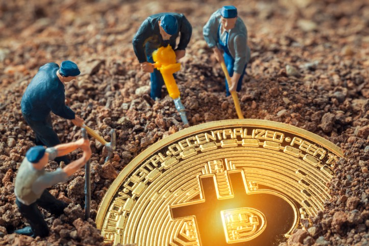

| Los nuevos bitcoins son generados por un proceso competitivo y descentralizado llamado "minería". Este proceso se basa en que los individuos son premiados por la red por sus servicios. Los mineros de Bitcoin procesan las transacciones y aseguran la red usando un hardware especializado y recogen bitcoins a cambio de este servicio. El protocolo Bitcoin está diseñado de manera que los nuevos bitcoins se crean con un ritmo fijado. Esto hace que la minería de bitcoin sea un negocio muy competitivo. Cuanto más mineros acceden a la red, incrementa la dificultad para obtener beneficios y los mineros deben buscar la mayor eficiencia para reducir sus costes operativos. Ninguna autoridad central o desarrollador tiene el poder de controlar o manipular el sistema para incrementar sus beneficios. Cada nodo Bitcoin que hay en el mundo rechazará automáticamente todo lo que no se ajuste a las normas que se esperan del sistema a seguir. Los bitcoins se crean a velocidad predecible y decreciente. El numero de bitcoins creados cada año se reduce a la mitad de forma automática a lo largo del tiempo hasta que la emisión de bitcoin se detenga por completo al llegar a los 21 millones de bitcoins. Llegados a este punto, probablemente los mineros de bitcoin serán mantenidos exclusivamente por las numerosas y pequeñas tasas de transacciones. |  |